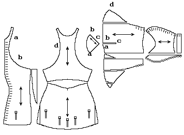

This item is a "pourpoint" (poo(r)-PWIN) and such was designed to attach one's hose to, as well as to help serve as a foundation for the garment worn over it. This particular one is said to have belonged to Charles of Blois (blwA), sometimes called Charles of Ch�tillon (shatEyoN'), c.1319-1364. He was the Duke of Brittany, and nephew of Philip VI of France. He fought in the War of the Breton Succession and was killed at the battle of Auray. He has been beatified, so this garment, if really his, is a relic. It is in the possession of the Mus�e Historique des Tissus in Lyon.
This garment is clearly a tailored and constructed garment. It is of silk, and while tightfitting is also somewhat padded. It is very full over the chest, and flat over the hips and abdomen. The construction style of the arms is similar to that of the Moy Gown, although the Moy garment shows less piecing. The buttons along the sleeve and chest are rounded, while the buttons below the level of the rib cage are flattened, as is the top button. These may have helped to fit a garment or armor over them. There is a small (6" or so) slit up along the hips.
Return to Contents or Misc. French Sites
Some Clothing of the Middle Ages, by I. Marc Carlson, Copyright 1996, 1999 This code is given for the free exchange of information, provided the Author's Name is included in all future revisions, and no money change hands-